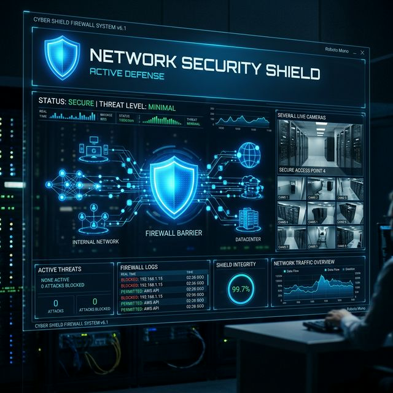

The Vision
Securing a physical and digital perimeter requires a unified approach. This project integrates network-level security with physical monitoring powered by AI.
Key Components
- Custom PFSense implementation with strict IDS/IPS rules.
- Automated threat blocking based on real-time traffic analysis.
- OpenCV-based motion detection and object recognition for premises monitoring.
- Encrypted remote access for surveillance feeds.
Technical Implementation
The system uses a dedicated low-power server running PFSense for the firewall, and a separate edge device for OpenCV-driven surveillance, communicating via a secured local network.